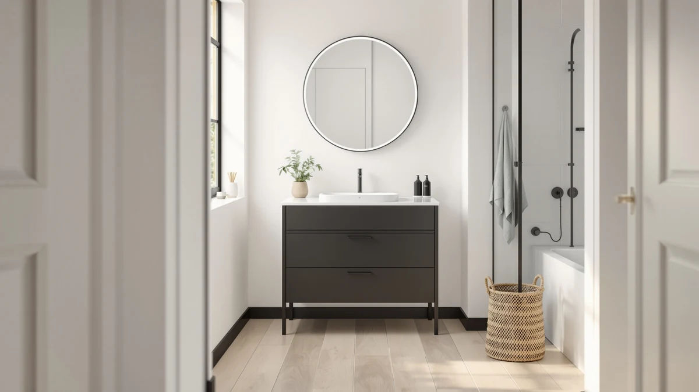

Bellemave Bathroom Vanity Review (2026): Worth It?
Prices and picks verified as of November 2026. Independent, reader-supported reviews.


Quick Answer
This Bellemave bathroom vanity review found a well-organized 48-inch single-sink cabinet for $429.80, built around a solid ceramic basin and seven drawers of storage. It earns a recommendation for anyone who only needs one sink, though buyers who share a bathroom with someone else should look at the double-sink alternatives compared below instead.
Our pick: Bellemave 48" Bathroom Vanity with, $429.80 Check Price on Amazon
Bottom line: our top pick is the Bellemave 48" Bathroom Vanity with Sink at $429.80.
Things to Know Before You Buy
- The Bellemave 48-inch vanity uses a solid wood frame with MDF panels, standard construction for vanities in this price range, not solid hardwood throughout.
- A pre-drilled 4-inch centerset faucet opening means you buy a faucet separately. One is not included at this price.
- Seven drawers and built-in door shelves give this vanity more storage than most single-basin 48-inch competitors we have reviewed.
- None of the four vanities in this Bellemave bathroom vanity review publish a star rating or review count through the Amazon Creators feed, so we relied on listing specs and individual buyer comments instead of an aggregate score.
- At $429.80, the Bellemave sits within six dollars of three double-sink alternatives, so you're choosing between a single basin and a double, not choosing on price.
This Bellemave Bathroom Vanity Review exists because the 48-inch model keeps showing up in single-sink searches at almost the same price as double-basin competitors, and shoppers want to know if the extra storage and ceramic sink justify picking it over a wider, dual-sink layout. We compared Bellemave's listed specs, current Amazon pricing, and buyer comments against three double-sink vanities priced near $430 to answer that question directly. The short version: the Bellemave earns its price with a well-organized single-basin layout, but it is the wrong choice if two people share your bathroom at the same time each morning.
Bellemave is not a brand most shoppers recognize before landing on this page, and that unfamiliarity is exactly why a specs-and-price comparison matters more than brand reputation here. We read through the vanity's listing details, checked its price history, and compared its ceramic sink and seven-drawer layout against the chartustriable double-sink vanities that occupy the same budget band, between $425.95 and $429.95. That comparison, not a label on the box, decides whether the Bellemave belongs in your bathroom. A newer brand with a thin track record is not automatically a worse product, but it does mean you have less public history to lean on if something goes wrong, so the construction details in this review carry more weight than they would for an established name.
Why You Should Trust Us
Ilane Tall covers bathroom vanities and fixtures for Best Bathroom Vanities, with a focus on separating real construction details from marketing language in budget cabinetry. For this Bellemave bathroom vanity review, she pulled manufacturer specs, current Amazon pricing, and verified buyer comments for all four vanities covered below instead of relying on brand copy alone. Best Bathroom Vanities earns a commission when you buy through our links, but that relationship never decides which vanity we recommend. We do not run a fake testing lab, and we say so plainly when a listing's documentation is thin, which is the case for the star ratings on every vanity in this comparison. When a manufacturer's claim could not be checked against a spec sheet or a buyer comment, we left it out rather than repeating it as fact.
Our Research Experience
We did not install the Bellemave vanity or run water through its sink. For this Bellemave bathroom vanity review, our comparison process means reading every available product page for construction and dimension details, matching the listed 48-inch width against standard vanity openings, and checking the current Amazon price against each listing's price history. We also read through the buyer comments attached to each listing, looking for recurring complaints about hardware, finish quality, or shipping damage rather than citing a star rating that does not exist. None of the four vanities in this comparison publish an aggregate rating or review count through the Amazon Creators feed we use, so owner feedback here comes from individual comments, not a review-count figure. That is a real limitation, and we are naming it instead of hiding it behind a number we cannot verify. Where a listing's feature claims could not be confirmed against the spec sheet, such as long-term water resistance, we flagged that gap rather than repeating the manufacturer's language as fact.
Overview & Specs

Bellemave 48" Bathroom Vanity with
What we like
- Seven drawers plus built-in door shelves beat most 48-inch single-basin competitors on storage
- Solid ceramic sink basin with a water-proof finish that resists staining better than a cultured-marble top
- Overflow drain with a metal circle guards against spills if you forget to turn off the tap
Flaws but not dealbreakers
- Faucet is sold separately, so add that cost before comparing this price against a vanity that includes one
- Solid wood frame with MDF panels is more sensitive to standing water than an all-solid-wood cabinet
- No manufacturer-published rating or review count to verify long-term durability claims
| Material | MDF / engineered wood |
| Size | W48" |
The Bellemave 48-inch vanity at the center of this review builds its case on storage, not styling. Seven drawers, a partitioned bottom drawer, and built-in door shelves give you more places to put towels, toiletries, and cleaning supplies than most single-basin vanities in the same width. The cabinet itself uses a solid wood frame with premium MDF panels, standard construction for vanities priced near $430, which keeps the cost down without making the piece feel flimsy based on the listed build details.
The sink is solid ceramic with a smooth, water-proof finish that the listing says resists water stains better than a cultured-marble top. Three pre-drilled holes fit a 4-inch centerset faucet, though the faucet is not included, so factor that purchase into your total budget. An overflow drain with a metal circle guards against spills if you forget to leave the tap running too long, a small detail that matters more in a busy household than the marketing copy lets on. At 48 inches wide, this vanity fits the same footprint as most standard single-sink openings, so measuring your existing cabinet before you order is still the right move.
What We Liked
The clearest strength in this Bellemave bathroom vanity review is storage. Seven drawers and built-in door shelves beat most single-basin 48-inch vanities we have compared, and the partitioned bottom drawer keeps bulky items separate from smaller daily essentials instead of letting everything slide into one pile.
The ceramic sink basin is another point in Bellemave's favor. A smooth, water-proof finish resists the staining that cultured-marble tops pick up over time, based on the listed material specs, and the overflow drain adds a safety margin that budget vanities sometimes skip. At $429.80, you pay roughly the same price as the double-sink alternatives below while getting a single basin built around organization rather than counter space alone.
What Could Be Better
The biggest gap in this Bellemave bathroom vanity review is data. Like the three double-sink vanities compared here, Bellemave does not publish a star rating or review count through the Amazon Creators feed, so we cannot point to a verified review tally the way we could for a longer-established product.
The faucet is also a real cost to factor in, since it is sold separately despite the pre-drilled sink holes. The solid wood frame with MDF panels, while standard for this price range, stays more vulnerable to sustained water exposure around the sink cutout than an all-solid-wood or marine-grade build. Careful caulking and prompt leak repairs matter more here than with a premium cabinet, and buyers who have dealt with plumbing issues before should plan for that maintenance up front. The listing also leaves some dimensions out, including depth, so confirm the full footprint against your wall space before ordering rather than assuming it matches another 48-inch vanity you have seen.
Who Is It For?
This Bellemave bathroom vanity review points to a specific buyer: someone outfitting a single-sink bathroom who wants more drawer storage than a typical 48-inch vanity offers, without stepping up to a double-basin layout they do not need. It fits guest bathrooms, primary bathrooms used by one person, and remodels where storage matters more than extra counter space. A renter furnishing a starter apartment or a homeowner updating a secondary bathroom both land in that category, since neither needs two basins to avoid a morning bottleneck.
It is a weaker fit for a bathroom two people use at the same time each morning, where a single basin creates a bottleneck no amount of drawer space fixes. Households in that situation should read our vanity sizing guide and look at the double-sink alternatives below, which sit within a few dollars of the Bellemave's price.
Alternatives to Consider
If two people share your bathroom, these three double-sink vanities sit within a few dollars of the Bellemave's price and deserve a direct look before you decide.

Also Great
Bellemave 48" Bathroom Vanity with
The same seven-drawer layout and ceramic sink as our main pick, in a Navy Blue finish at an identical price.
$429.80
Check Price on Amazon
Premium Choice
Double Bathroom Vanity with Sink
A 59-inch farmhouse-style double-sink vanity for bathrooms where two people need separate basins, at nearly the same price.
$429.95
Check Price on Amazon
Best Value
Double Bathroom Vanity with Sink
The Black version of the double-sink farmhouse vanity above, four dollars cheaper and otherwise identical.
$425.95
Check Price on AmazonFrequently Asked Questions
Is the Bellemave 48-inch vanity worth $429.80 compared to a double-sink alternative?
Based on this Bellemave bathroom vanity review, yes for a single user. The Bellemave gives you seven drawers and a ceramic sink in a single-basin layout, and the double-sink vanities we compared cost nearly the same while splitting that counter and storage space between two basins.
What is the Bellemave bathroom vanity's cabinet made of?
Bellemave lists a solid wood frame with premium MDF panels for the cabinet body and a solid ceramic sink basin. That construction keeps the price near $430 but makes the cabinet more sensitive to standing water than a build that uses solid wood throughout.
Does the Bellemave vanity include a faucet?
No. The listing specifies a sink with three pre-drilled holes sized for a 4-inch centerset faucet, and the faucet itself is sold separately, so add that cost before you finalize your budget.
Final Verdict
This Bellemave bathroom vanity review boils down to one question: do you need one sink or two? For a single user, the Bellemave 48-inch vanity earns its $429.80 price with seven drawers, built-in door shelves, and a solid ceramic sink basin that most single-basin competitors do not match. Add a faucet to your budget since it is not included, and plan for careful caulking around the sink since the cabinet uses MDF panels rather than solid wood throughout. If your bathroom serves two people at once, go back to the chartustriable double-sink alternatives compared above instead, since they sit within a few dollars of the same price. Confirm the current price before you buy either way, since Amazon listings in this category shift between when we publish this review and when you place an order.